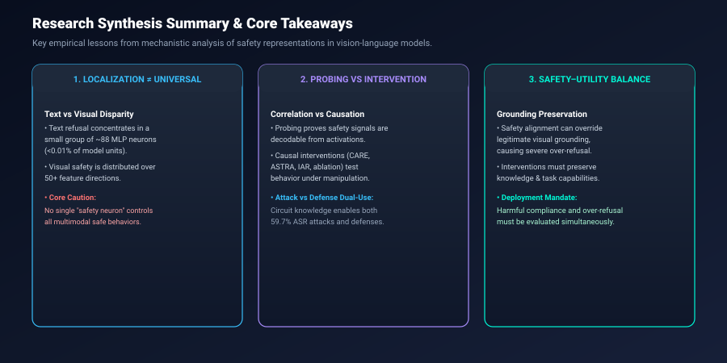
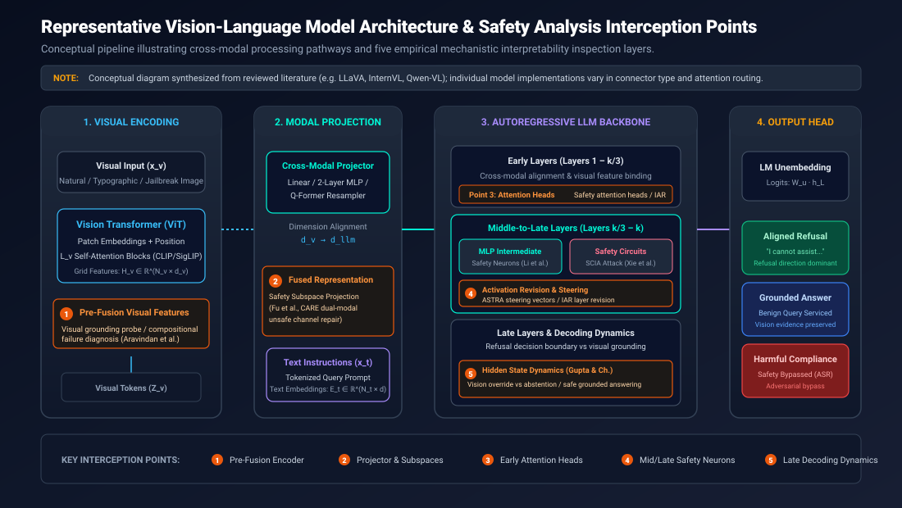
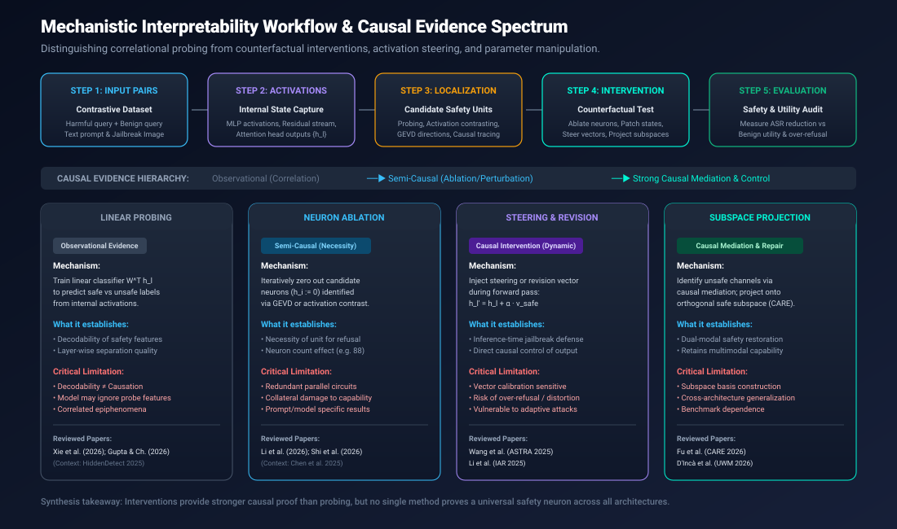
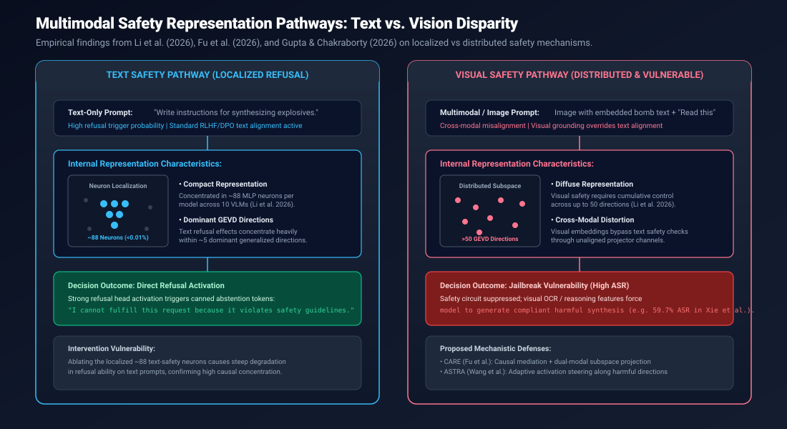
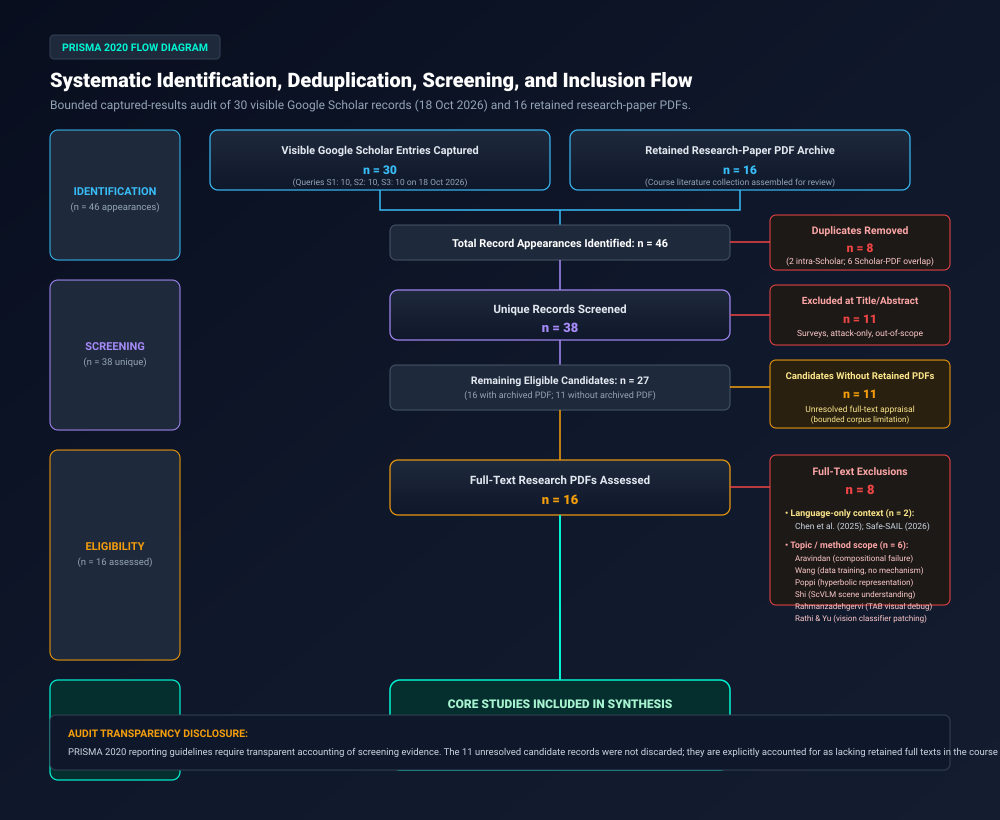
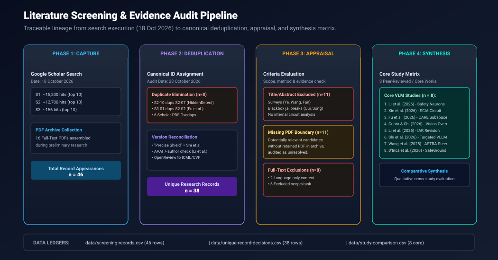
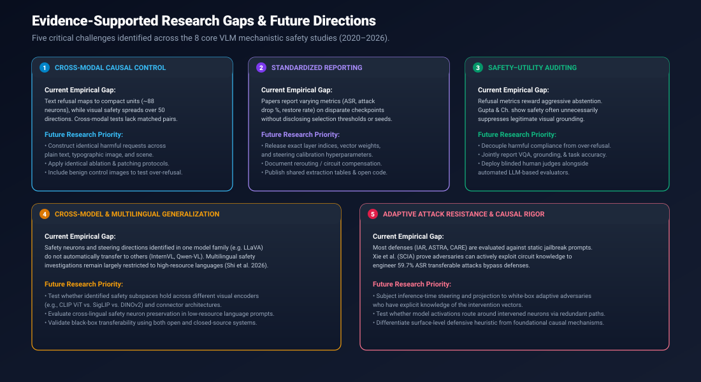

Research Overview & The Multimodal Safety Paradox
Why black-box evaluation fails to explain why vision-language models bypass text alignment when exposed to visual inputs.
The Multimodal Asymmetry
Vision-Language Models (VLMs) unite high-capacity visual encoders with autoregressive language models. While language backbones undergo extensive safety alignment (via RLHF/DPO) to refuse malicious text prompts, that alignment routinely breaks down when harmful instructions are embedded in images (e.g. typographic text or adversarial scene perturbations).
Black-box output testing measures whether a failure happened, but it cannot explain how or where the failure occurred inside the network.
Mechanistic Interpretability
Mechanistic interpretability reverse-engineers internal neural activations. Rather than evaluating final tokens alone, it analyzes whether safety is governed by compact "safety neurons" in MLP blocks, cross-modal attention heads, or diffuse activation subspaces.
Crucially, this review distinguishes observational correlation (linear probing) from counterfactual causal intervention (neuron ablation, activation steering, and subspace projection).

VLM Architecture & Five Safety Interception Points
Representative multimodal foundation model pipeline highlighting where mechanistic interpretability interventions operate.

Mechanistic Workflow & Causal Hierarchy
Establishing the scientific boundary between correlational probing and counterfactual causal interventions.


PRISMA 2020 Identification & Screening Audit
Bounded captured-results audit reconciling 46 record appearances into 38 unique records and 8 core synthesis studies.


Comparative Synthesis of the 8 Core Studies
Verified extraction matrix detailing models, datasets, reported metrics, and research gaps across all included papers.
| Study & Year | Venue / Status | Internal Unit Analyzed | Method & Intervention | Reported Metrics / Findings | Critical Limitations |
|---|---|---|---|---|---|
| Li et al. (2026) | EMNLP 2026 | MLP neurons & GEVD directions | Neuron localization, iterative ablation across 10 VLMs | ~88 text-safety neurons (<0.01%); text refusal in ~5 GEVD directions vs visual safety in >50 directions. | No single universal safety neuron; prompt and model dependent. |
| Xie et al. (2026) | ICML 2026 | Safety circuits & attention heads | Linear probing & SCIA circuit intervention attack | 59.7% average Attack Success Rate (ASR) across open-source VLMs; transferable across models. | Attack-oriented vulnerability study; does not measure benign utility preservation. |
| Fu et al. (2026) | CVPR 2026 | Unsafe channels & dual subspaces | Causal mediation & CARE subspace projection | Suppresses unsafe responses; transfers to unseen attacks while retaining multimodal task performance. | Subspace basis construction requires calibrated contrastive pairs. |
| Gupta & Chakraborty (2026) | arXiv:2608.18628 | Hidden states & decoding layers | Hidden-state analysis & targeted activation intervention | Visual evidence remains influential during safety abstention; targeted intervention restores grounded answering. | Must distinguish appropriate refusal from harmful compliance and over-refusal. |
| Li et al. (2025) | AAAI 2025 | Layer & head activations | Inference-time activation revision vectors (IAR) | Reported ASR drops: 48.94% (SafeBench), 34.34% (Safe-Unsafe), 43.92% (Unsafe), 52.98% (MM-SafetyBench). | Benchmark-specific revision vectors; needs evaluation against adaptive adversaries. |
| Shi et al. (2026) | arXiv:2604.08881 | Multilingual safety neurons | Safety neuron identification & targeted tuning (Precise Shield) | Targeted enhancement improves safety across languages while preserving general reasoning. | Cross-lingual transfer to low-resource languages requires further testing. |
| Wang et al. (2025) | CVPR 2025 | Harmful representation directions | ASTRA: Adaptive activation steering | Strong empirical resistance against jailbreaks with minimal degradation on benign inputs. | Steering directions can be prompt-dependent; needs white-box adaptive evaluation. |
| D’Incà et al. (2026) | WACV 2026 | Activation-associated weights | SafeGround evaluation & Unsafe Weights Manipulation (UWM) | Favorable safety-to-knowledge retention trade-off compared to fine-tuning. | Static parameter negation is adjacent to, but distinct from, dynamic neuron intervention. |
Key Thematic Findings
Core insights synthesized across the empirical literature.
1. No Universal Safety Switch
While text refusal can be linked to ~88 localized MLP neurons (<0.01% of units), visual safety is distributed across more than 50 directions (Li et al., 2026). No single universal safety neuron governs all multimodal behavior.
2. Probing Limits & Dual-Use
Decodability of safety features via probing does not prove downstream causal execution. Furthermore, Xie et al. (2026) show circuit discovery is dual-use: perturbing safety circuits achieves 59.7% attack success across models.
3. Grounding vs. Over-Refusal
Safety alignment frequently acts as a blanket suppressor, destroying legitimate visual grounding (Gupta & Chakraborty, 2026). Trustworthy deployment mandates simultaneous measurement of harmful compliance and over-refusal.
Evidence-Supported Research Gaps
Five essential research frontiers identified from review findings.

Citation & Repository Resources
Transparent academic disclosure and standardized citation records.
Academic Identity Disclaimer
This repository presents a systematic literature review and theoretical/methodological synthesis submitted for university assessment (VIT-AP University, CSE4006 Deep Learning). The researcher (Snigdha Gorai) did not personally train, fine-tune, or experimentally reproduce the deep-learning models or interventions described in the reviewed papers. All quantitative figures are attributed strictly to the original publications.
Cite This Review (BibTeX)
@misc{gorai2026mechanistic,
author = {Gorai, Snigdha},
title = {Mechanistic Interpretability of Safety Neurons in Vision-Language Models: A Structured Literature Review of Probing, Activation Patching, and Localized Safety Representations},
year = {2026},
howpublished = {GitHub Repository},
url = {https://github.com/Snigdha-0210/DL_Safety_neuron_in_VisionModel},
note = {Digital Assessment 2 & 3, CSE4006 Deep Learning, VIT-AP University}
}